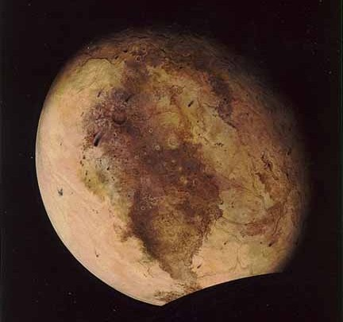

|
|
 PlutoPluto has been officially demoted from its status as a planet. The International Astronomical Union (IAU), at a meeting in August 2006, voted on their first "official" definition of a planet. Based on this new definition, Pluto is no longer a planet. According to the IAU's definition, our Solar System has eight planets: Mercury, Venus, Earth, Mars, Jupiter, Saturn, Uranus, and Neptune. In the new scheme, Pluto will be one of several "dwarf planets" in the Solar System; but "dwarf planets" are not considered true planets. For it to be a planet it has to be in orbit around the Sun; have sufficient mass for its self-gravity to overcome rigid body forces so that it assumes a hydrostatic equilibrium (near spherical) shape; have cleared the neighborhood around its orbit or within the system; is in orbit around a star or stellar remnants; has a mass below the limiting mass for thermonuclear fusion of deuterium; is above the minimum mass/size requirement for planetary status in the Solar System. Data from 1999 shows that the surface of Pluto is made up of two different parts, it has an icy part and a non-icy part (the non-icy part may be some sort of rock). Scientists are fairly certain the icy part is made of frozen nitrogen, but also contains smaller amounts of frozen carbon monoxide and methane. The interior of Pluto is probably similar to that of major icy moons such as Ganymede. Pluto is actually smaller than Ganymede, even though Ganymede is a moon. Pluto’s atmosphere is so at 39 AU which is very cold. But at times Pluto is closer to the sun than Neptune is which makes the ices on Pluto's surface evaporate and form an atmosphere. It is continually produced and lost again as long as Pluto is inside Neptune's orbit. The air on Pluto is made mostly of nitrogen gas, just like that of the Earth and Saturn's moon Titan, with the addition of carbon monoxide and methane. The atmosphere is also similar to that of Neptune's moon Triton. On Triton there are seasons and winds. Because Pluto has a bigger atmosphere than Triton, there may even be clouds and storms. No one knows whether or not Pluto has a magnetosphere. Scientists were very surprised to find that Jupiter's icy moon Ganymede had a magnetosphere because it is hard to explain how an icy body can develop a magnetic field. Nevertheless, Pluto may well have a magnetic field, as a result of its dual orbit with its moon Charon. Pluto has 3 moons. One of the moons is very large. The large moon is named Charon. The other two moons are fairly small. They don't really have names yet. |